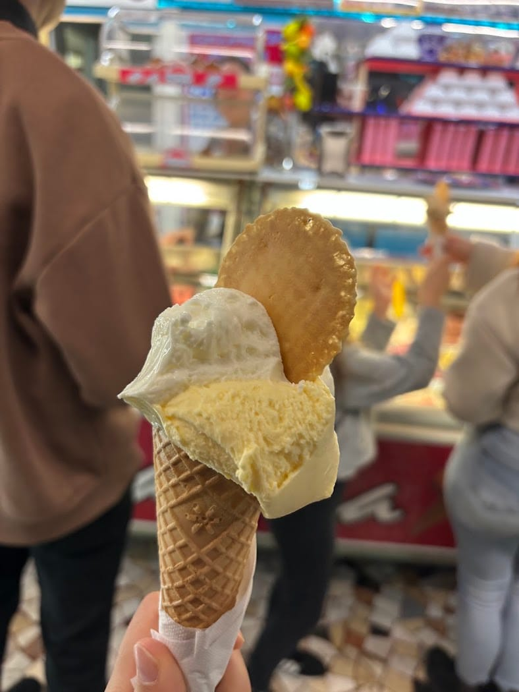
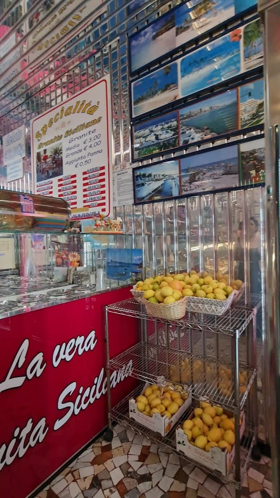
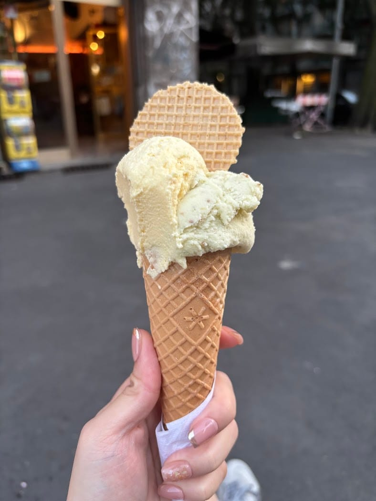
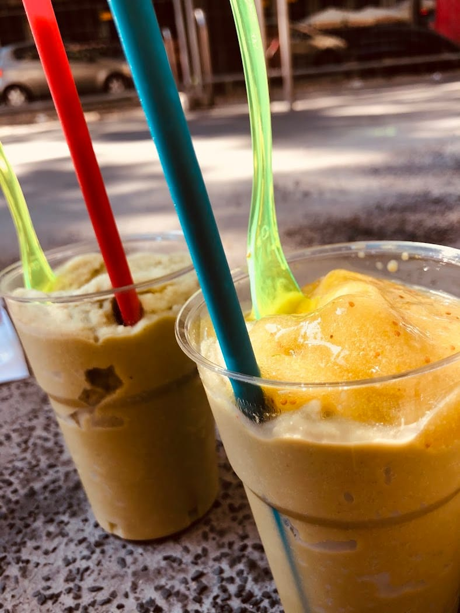
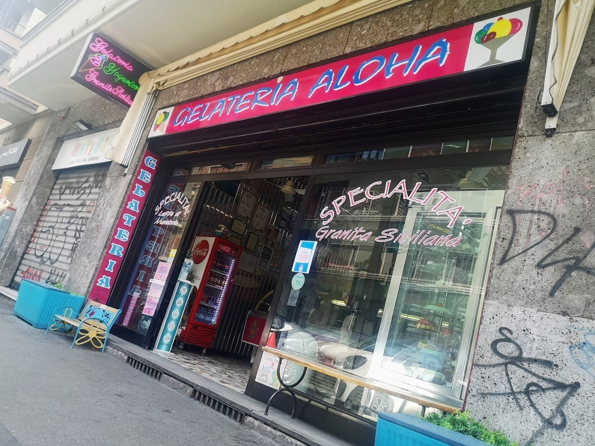
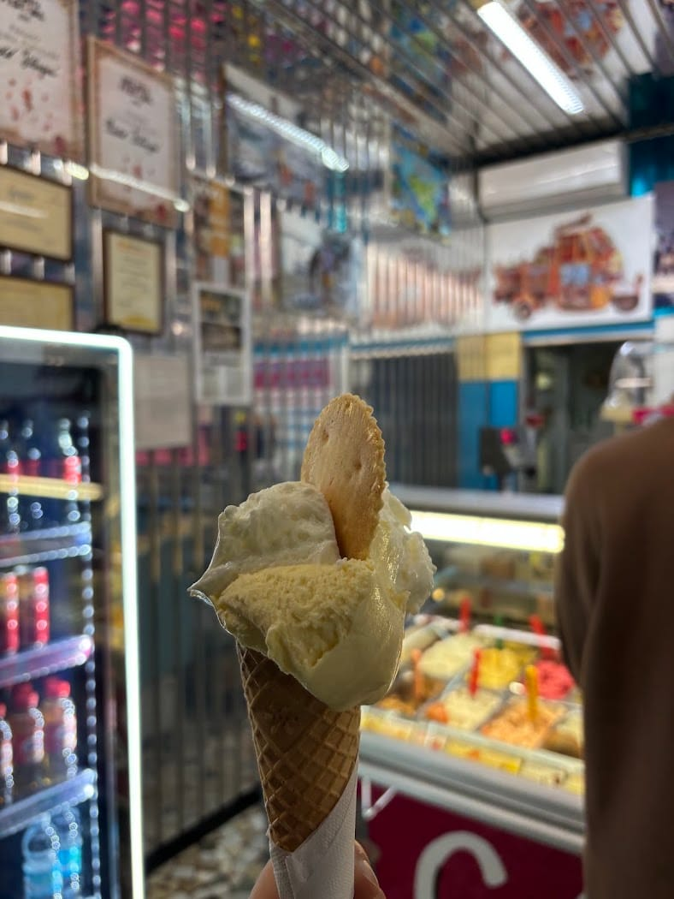
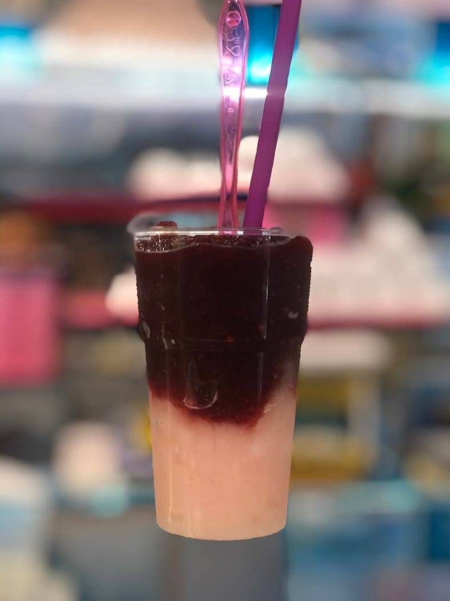
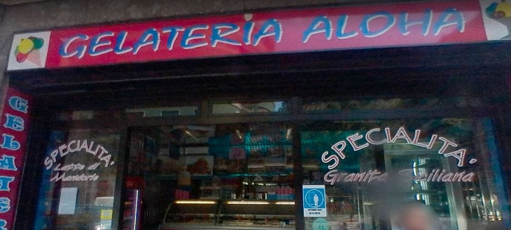

Gelato · Granita siciliana · Latte di mandorla
Gelateria siciliana in Via Vallazze da una vita. Gusti alla frutta che «sembra di mangiarla», granita e latte di mandorla. C'è chi lo chiama il miglior gelato di Milano.
Controllo orari…

I gusti
Tanti gusti, tutti artigianali. Quelli alla frutta sembra di mangiarla davvero.

La bottega
Aloha è una gelateria siciliana in Via Vallazze: latte di mandorla, granita e gelato artigianale, con una cura che non è cambiata negli anni. «Mangio questo gelato da quando sono nato e la qualità è rimasta pazzesca», scrive chi ci torna da sempre.
Tanti gusti, un ottimo rapporto qualità-prezzo e un proprietario gentile e socievole, che ti fa assaggiare prima di scegliere. Il resto lo fa il sole.
Gallery






Le voci
Mangio questo gelato da quando sono nato e la qualità è rimasta sempre pazzesca. Assaggiate i gusti alla frutta: sembra di mangiarla direttamente. Miglior gelato di Milano a mani basse.
Luca Poltronieri · ★★★★★
Ottimo rapporto qualità-prezzo: € 2,70 per 2 gusti. Ci sono moltissimi gusti ed il gelato è buonissimo. Il proprietario, gentile e socievole, mi ha fatto assaggiare prima di scegliere.
S. Z. · ★★★★★
A really nice place to stop and enjoy a treat. The atmosphere is cozy and welcoming, perfect for a quick break with friends. The gelato was very good.
Patrizia I. P. · ★★★★★
Dove siamo
La mappa è di Google: aprendola, Google riceve il tuo indirizzo IP e può usare i suoi cookie.
FAQ
In Via Vallazze 102, in Città Studi a Milano.
Tutti i giorni, dalle 11:30 alle 23:30 (il sabato dalle 11).
2 gusti € 2,70, 3 gusti € 3,50. Un ottimo rapporto qualità-prezzo.
Sì, è la nostra specialità: granita siciliana e latte di mandorla.